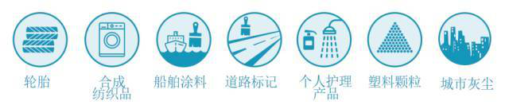
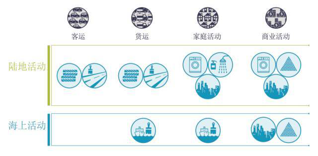
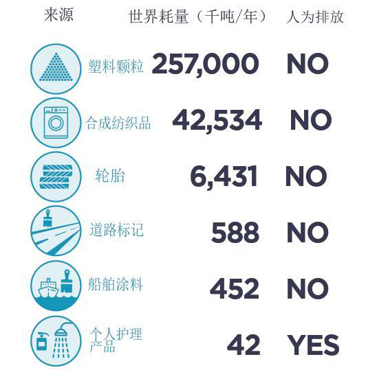
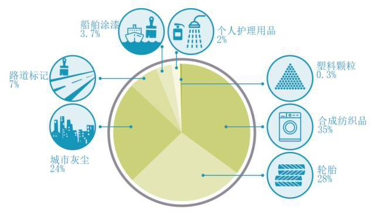
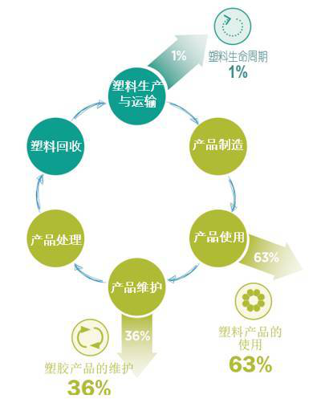
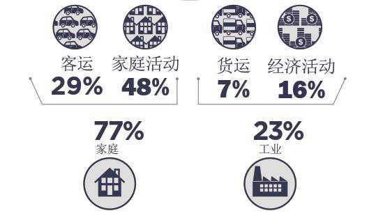
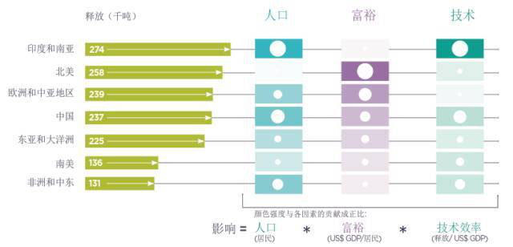

新闻中心
NEW OFFICE FURNITURE
您当前的位置: 首页 新闻中心
Location:Collections new office furniture
“无微不至”一海洋中的微塑料
2004年，英国普利茅斯大学的汤普森等人在《科学》杂志上发表了关于海洋水体和沉积物中塑料碎片的论文，首次提出了“微塑料” 的概念，指的是直径小于5毫米的塑料碎片和颗粒。实际上,微塑料的粒径范围从几微米到几毫米，是形状多样的非均匀塑料颗粒混合体，肉眼往往难以分辨，被形象地称为“海中的PM2.5”。
与“白色污染”塑料相比，微塑料的危害体现在其颗粒直径微小上，这是其与- -般的不可降解塑料相比，对于环境的危害程度更深的原因。
食物链的顶端的生物是人类，人类在富集的作用下，会累积大量的微塑料在体内，这些难以消化的小颗粒对人产生难以预计的危害。(百科词条)
微塑料分为初生微塑料和次生微塑料两大类:初生微塑料是指经过河流、污水处理厂等排入水环境中的塑料颗粒工业品，如化妆品等含有的微塑料颗粒或作为工业原料的塑料颗粒和树脂颗粒。次生微塑料是由大型塑料垃圾经过物理、化学和生物过程造成分裂和体积减小而成的微小塑料颗粒。(百度TA说)
海洋中的塑料污染规模是惊人的，每年有950万吨新产生的塑料垃圾进入海洋。这严重地影响了地球.上宝贵的生物多样性,伤害了我们赖以生存的脆弱的生态系统。随着微塑料进入我们的食物和饮用水供给，大规模的海洋污染正快速人类健康的巨大威胁。
全球的海洋环境都正在被塑料所污染。塑料可以被分为两种形式:大块的塑料垃圾，以及直径在5毫米以下的被称为“微塑料”的塑料颗粒。
大块的塑料垃圾很容易被人们所发现，但微塑料是肉眼难以观察到的。与大块塑料相比，微塑料带来的消极影响并没有那么显著，但它们在海洋中可能会产生影响更为深远的后果。微塑料在食物链中的累积以及其表面附着的有毒物质，都对人类的健康产生了威胁。
海洋中的7种初级微塑料来源
在陆地上或者在海上,商业和家庭的很多生活中都会使用塑料制品.以下是最为人熟知的几种初级微塑料来源.
7种初级微塑料来源的情景分布
从每年超过3亿吨的全球塑料耗量来计算，这7种初级微塑料每年的消耗量如下表。其中塑料颗粒占85%、合成纺织品占129%,轮胎的合成橡胶占2%。
排放到海洋中7种初级微塑料的比例
如下图所示，接近三分之二的释放主要来源于合成纺织品(34.8%),与轮胎的磨损(28.39%]。 第三位(24.2%)是城市灰尘。个人护理产品只占全球初级塑料的2%。
排放到世界海洋的初级微塑料比例
日常家庭活动产生了近3/4的初级微塑料排放
如下图所示，通过家庭活动直接产生的微塑料排放,大约是3/4(77%)。而剩下的1/4产生于经济活动。很多家庭的排放都产生于产品的使用阶段(49%),其余的排放(28%)产生于产品的维护过程。家庭微塑料排放中的运输排放占1/3(38%)，是来源于私家车出行而引起的轮胎和道路标记的排放。例如，在欧洲，90%的驾驶距离都是私家车产生;其余(62%)的来源与其他家庭活动有关一洗熨合成纺织品、 使用个人护理产品和休闲船只的涂料。
经济活动的释放比家庭释放的要低得多(23%),其中大部分也发生在产品的使用阶段。由于商业运输产生的释放份额与家庭运输产生的释放相似但略低(30%)。公路运输系统本身就产生了大约总释放量的三分之一-(35.1%)的微塑料排放。
全球各地区初级微塑料的排放情况

下圏展示了初級微塑料排放量、区域GDP和人口的区域分布。最大的区域排放在印度与南亜(18.3%6)和北美(17.2%6),緊随其后的是欧洲和中巫(15.996), 中国(15.8%)与京正和大洋洲(15%)、 南美(9 .1%)、非洲和中东(8.7%)的释放量较低。
(IUCNÉÓJR# «Primary Plastics in theOceans» )
海洋塑料垃圾数量巨大，难降解，逐步积累，无所不在，已受到全球的重点关注。有研究表明，自20世纪50 年代开始大规模生产塑料到2018年，人类已经生产了83亿t塑料，其中的63亿t已成为垃圾，仅有9%的塑料垃圾被回收利用，12%被焚烧，79%则进入了垃圾填埋场或自然环境中。因此，倘若不改变塑料生产模式和固体废弃物管理模式，到2050 年人类将会产生120亿t塑料垃圾(Geyer et al,2017)。大量塑料垃圾通过各种途径进入海洋。模拟研究表明，全球192 个沿海国家和地区仅2010年向海输入的塑料垃圾就有400 ~ 1270万t。